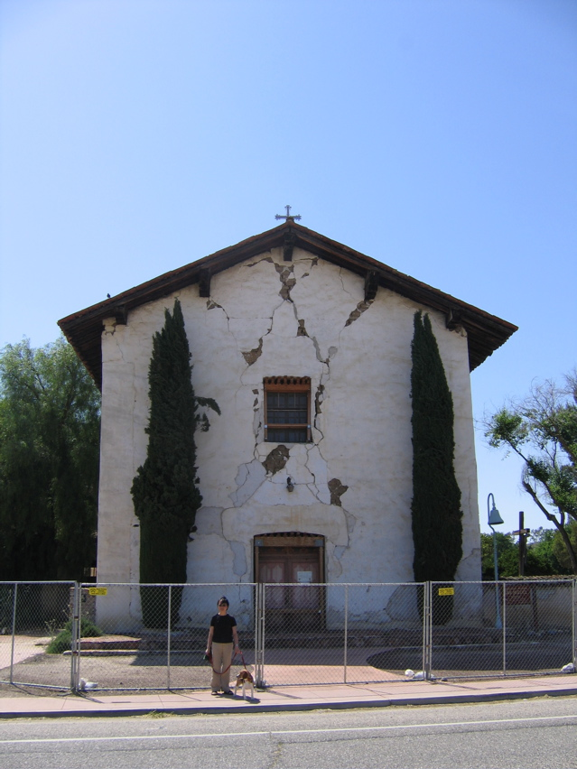

<--Previous Up Next-->

Mission San Miguel Arcangel
This mission was severely damaged in a quake in 2003. Huxley liked it anyway because he needed a break and there was a park next door. Fremont had camped there on his way to capturing Santa Barbara in 1846. There were more Fremont campsites at other missions and in the middle of wine country. I think he was on the same vacation.